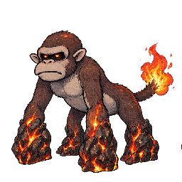

こおり
- 捕獲率
- 30
- 経験値
- 32
進化
進化しない
覚える技
| 習得 | 技 | タイプ | 威力 | 命中 | PP | 分類 |
|---|---|---|---|---|---|---|
| Lv.1 | Strong Wind | 40 | 100 | 35 | 特殊 | |
| Lv.2 | White Haze | こおり | 0 | 100 | 30 | 変化 |
| Lv.3 | Ice Ray | こおり | 90 | 100 | 10 | 特殊 |
| Lv.4 | Ice Storm | こおり | 110 | 70 | 5 | 特殊 |
| Lv.5 | Freezing Fist | こおり | 75 | 100 | 15 | 物理 |
| Lv.7 | Huge Hit from the Sky | 140 | 90 | 5 | 物理 | |
| Lv.9 | Very Strong Beam | ノーマル | 150 | 90 | 5 | 特殊 |
| Lv.10 | Reset Everything | こおり | 0 | 100 | 30 | 変化 |
カウンターできる相手
 Apprentice Fist弱点を突ける技
Apprentice Fist弱点を突ける技Huge Hit from the Sky（ひこう）で弱点2倍（ほか1件）

 Dirt Burrowerタイプ一致の弱点攻撃
Dirt Burrowerタイプ一致の弱点攻撃Ice Storm（こおり）で弱点2倍（ほか2件）


 Master Fist弱点を突ける技
Master Fist弱点を突ける技Huge Hit from the Sky（ひこう）で弱点2倍（ほか1件）
 Normal Pidgeonタイプ一致の弱点攻撃
Normal Pidgeonタイプ一致の弱点攻撃Ice Storm（こおり）で弱点2倍（ほか2件）
 Stately Pidgeonタイプ一致の弱点攻撃
Stately Pidgeonタイプ一致の弱点攻撃Ice Storm（こおり）で弱点2倍（ほか2件）
 アークウィルムタイプ一致の弱点攻撃
アークウィルムタイプ一致の弱点攻撃Ice Storm（こおり）で弱点2倍（ほか2件）
 ウィルムタイプ一致の弱点攻撃
ウィルムタイプ一致の弱点攻撃Ice Storm（こおり）で弱点2倍（ほか2件）
 ケンタルンタイプ一致の弱点攻撃
ケンタルンタイプ一致の弱点攻撃Ice Storm（こおり）で弱点2倍（ほか2件）
 サジタウルタイプ一致の弱点攻撃
サジタウルタイプ一致の弱点攻撃Ice Storm（こおり）で弱点2倍（ほか2件）
 セレスティアル・アークドラゴンタイプ一致の弱点攻撃
セレスティアル・アークドラゴンタイプ一致の弱点攻撃Ice Storm（こおり）で弱点2倍（ほか2件）
 ゼブル弱点を突ける技
ゼブル弱点を突ける技Huge Hit from the Sky（ひこう）で弱点2倍（ほか1件）
 ベルゼブルフライ弱点を突ける技
ベルゼブルフライ弱点を突ける技Huge Hit from the Sky（ひこう）で弱点2倍（ほか1件）


カウンターされる相手
- Apprentice Fistタイプ一致の弱点攻撃
Jump High with Knee（かくとう）で弱点2倍（ほか4件）
 Blazing Lizardタイプ一致の弱点攻撃
Blazing Lizardタイプ一致の弱点攻撃Big Fire（ほのお）で弱点2倍（ほか4件）
 Fire Lizardタイプ一致の弱点攻撃
Fire Lizardタイプ一致の弱点攻撃Big Fire（ほのお）で弱点2倍（ほか4件）
 Flame Lizardタイプ一致の弱点攻撃
Flame Lizardタイプ一致の弱点攻撃Big Fire（ほのお）で弱点2倍（ほか4件）
- Master Fistタイプ一致の弱点攻撃
Jump High with Knee（かくとう）で弱点2倍（ほか5件）
 Rock Armorタイプ一致の弱点攻撃
Rock Armorタイプ一致の弱点攻撃Falling Rocks（いわ）で弱点2倍（ほか1件）
- カルデラゴリラタイプ一致の弱点攻撃
Big Fire（ほのお）で弱点2倍（ほか5件）

ゴルカタイプ一致の弱点攻撃Flame（ほのお）で弱点2倍（ほか1件）
登場するモンスター構成
- V2 ドラフト レア
変更履歴
sha256:35bb56e75…現在日本語名変更
sha256:c52bd8947…初回記録